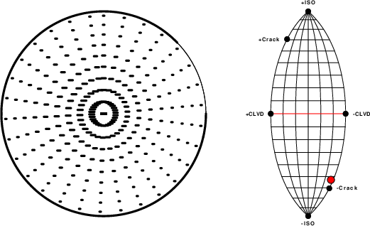
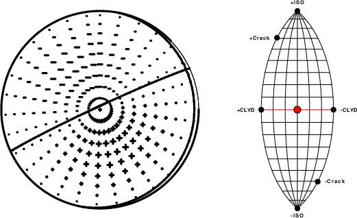
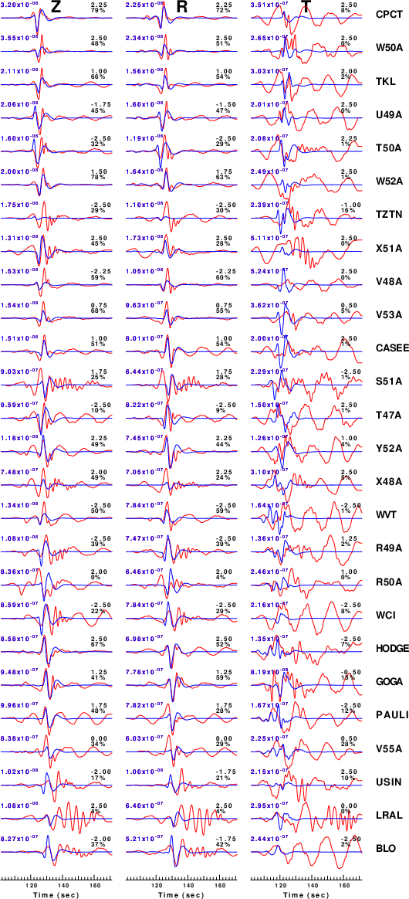

USGS/SLU Moment Tensor Solution
ENS 2021/08/13 11:57:35:0 35.88 -84.90 1.0 3.5 Tennessee
Stations used:
CO.CASEE CO.HODGE CO.PAULI ET.CPCT IM.TKL IU.WCI IU.WVT
N4.R49A N4.R50A N4.S51A N4.T47A N4.T50A N4.U49A N4.V48A
N4.V53A N4.V55A N4.W50A N4.W52A N4.X48A N4.X51A N4.Y52A
NM.BLO NM.USIN US.GOGA US.LRAL US.TZTN
Filtering commands used:
cut o DIST/3.3 -40 o DIST/3.3 +50
rtr
taper w 0.1
hp c 0.03 n 3
lp c 0.10 n 3
Best Fitting Double Couple
Mo = 8.32e+21 dyne-cm
Mw = 3.88
Z = 8 km
Plane Strike Dip Rake
NP1 41 60 -87
NP2 215 30 -95
Principal Axes:
Axis Value Plunge Azimuth
T 8.32e+21 15 129
N 0.00e+00 2 219
P -8.32e+21 75 318
Moment Tensor: (dyne-cm)
Component Value
Mxx 2.70e+21
Mxy -3.50e+21
Mxz -2.89e+21
Myy 4.47e+21
Myz 3.03e+21
Mzz -7.18e+21
##############
############---------#
##########------------------
########---------------------#
########-----------------------###
#######------------------------#####
#######-------------------------######
#######-------------------------########
######---------- -------------########
######----------- P ------------##########
######----------- -----------###########
#####-------------------------############
#####-----------------------##############
####----------------------##############
####--------------------################
###------------------#################
###---------------############ ###
##-------------############## T ##
#--------##################
############################
######################
##############
Global CMT Convention Moment Tensor:
R T P
-7.18e+21 -2.89e+21 -3.03e+21
-2.89e+21 2.70e+21 3.50e+21
-3.03e+21 3.50e+21 4.47e+21
Details of the solution is found at
http://www.eas.slu.edu/eqc/eqc_mt/MECH.NA/20210813115735/index.html
|
STK = 215
DIP = 30
RAKE = -95
MW = 3.88
HS = 8.0
The NDK file is 20210813115735.ndk The waveform inversion is preferred.
The following compares this source inversion to others
USGS/SLU Moment Tensor Solution
ENS 2021/08/13 11:57:35:0 35.88 -84.90 1.0 3.5 Tennessee
Stations used:
CO.CASEE CO.HODGE CO.PAULI ET.CPCT IM.TKL IU.WCI IU.WVT
N4.R49A N4.R50A N4.S51A N4.T47A N4.T50A N4.U49A N4.V48A
N4.V53A N4.V55A N4.W50A N4.W52A N4.X48A N4.X51A N4.Y52A
NM.BLO NM.USIN US.GOGA US.LRAL US.TZTN
Filtering commands used:
cut o DIST/3.3 -40 o DIST/3.3 +50
rtr
taper w 0.1
hp c 0.03 n 3
lp c 0.10 n 3
Best Fitting Double Couple
Mo = 8.32e+21 dyne-cm
Mw = 3.88
Z = 8 km
Plane Strike Dip Rake
NP1 41 60 -87
NP2 215 30 -95
Principal Axes:
Axis Value Plunge Azimuth
T 8.32e+21 15 129
N 0.00e+00 2 219
P -8.32e+21 75 318
Moment Tensor: (dyne-cm)
Component Value
Mxx 2.70e+21
Mxy -3.50e+21
Mxz -2.89e+21
Myy 4.47e+21
Myz 3.03e+21
Mzz -7.18e+21
##############
############---------#
##########------------------
########---------------------#
########-----------------------###
#######------------------------#####
#######-------------------------######
#######-------------------------########
######---------- -------------########
######----------- P ------------##########
######----------- -----------###########
#####-------------------------############
#####-----------------------##############
####----------------------##############
####--------------------################
###------------------#################
###---------------############ ###
##-------------############## T ##
#--------##################
############################
######################
##############
Global CMT Convention Moment Tensor:
R T P
-7.18e+21 -2.89e+21 -3.03e+21
-2.89e+21 2.70e+21 3.50e+21
-3.03e+21 3.50e+21 4.47e+21
Details of the solution is found at
http://www.eas.slu.edu/eqc/eqc_mt/MECH.NA/20210813115735/index.html
|
Moment (dyne-cm) 7.34E+21 dyne-cm
Magnitude (Mw) 3.84
Depth 4.0 km
Principal Axes:
Axis Value Plunge Azimuth
T 7.34E+21 48. 159.
N -9.30E+17 4. 65.
P -7.34E+21 42. 331.
Moment Tensor: (dyne-cm) Aki-Richards Lune parameters
Component Value
Mxx -2.01E+20 beta: 90.00
Mxy 6.17E+20 gamma: -0.01
Mxz -6.62E+21
Myy -5.30E+20
Myz 3.04E+21
Mzz 7.31E+20
Global CMT Convention Moment Tensor: (dyne-cm)
R T F
R 7.31E+20 -6.62E+21 -3.04E+21
T -6.62E+21 -2.01E+20 -6.17E+20
F -3.04E+21 -6.17E+20 -5.30E+20
-------------- :
---------------------# :---:
---------------------------# ::. ..::
------------------------------ :--------:
---------- --------------------# :: . . . :
----------- P ---------------------# : . . . :
------------ ----------------------- :------------::
---------------------------------######- :: . . . :
-----------------------------##########- : . . . :
-------------------------################- :---------------:
---------------------####################- : . . . :
-----------------########################- :=======#=======:
-------------############################- : . . . :
---------##############################- : . . . :
-----##################################- :---------------:
-#################### #############- : . . . :
#################### T ############- :: . . . :
################### ###########- :------------::
#############################- : . . . :
##########################-- :: . . . :
#####################- :--------:
#############- ::. ..::
:---:
:
|
Moment (dyne-cm) 1.06E+22 dyne-cm
Magnitude (Mw) 3.95
Depth 8.0 km
Principal Axes:
Axis Value Plunge Azimuth
T 6.58E+21 0. 203.
N 5.62E+21 7. 113.
P -1.22E+22 83. 297.
Moment Tensor: (dyne-cm) Aki-Richards Lune parameters
Component Value
Mxx 6.38E+21 beta: 89.93
Mxy 4.54E+20 gamma: 27.39
Mxz -9.76E+20
Myy 5.55E+21
Myz 1.94E+21
Mzz -1.19E+22
Global CMT Convention Moment Tensor: (dyne-cm)
R T F
R -1.19E+22 -9.76E+20 -1.94E+21
T -9.76E+20 6.38E+21 -4.54E+20
F -1.94E+21 -4.54E+20 5.55E+21
############## :
###################### :---:
############################ ::. ..::
###########-----############## :--------:
########---------------########### :: . . . :
#######-------------------########## : . . . :
######-----------------------######### :------------::
######-------------------------######### :: . . . :
#####---------------------------######## : . . . :
######------------ ------------######### :---------------:
######------------ P ------------######### : . . . :
######------------ ------------######### :==============#:
######---------------------------######### : . . . :
######-------------------------######### : . . . :
#######-----------------------########## :---------------:
########--------------------########## : . . . :
#########----------------########### :: . . . :
############--------############## :------------::
############################## : . . . :
############################ :: . . . :
### ################ :--------:
T ############ ::. ..::
:---:
:
|
Moment (dyne-cm) 1.43E+22 dyne-cm
Magnitude (Mw) 4.04
Depth 5.0 km
Principal Axes:
Axis Value Plunge Azimuth
T -3.98E+21 14. 106.
N -4.78E+21 2. 196.
P -1.92E+22 76. 293.
Moment Tensor: (dyne-cm) Aki-Richards Lune parameters
Component Value
Mxx -4.85E+21 beta: 143.11
Mxy 1.11E+20 gamma: 27.33
Mxz -1.37E+21
Myy -4.80E+21
Myz 3.31E+21
Mzz -1.83E+22
Global CMT Convention Moment Tensor: (dyne-cm)
R T F
R -1.83E+22 -1.37E+21 -3.31E+21
T -1.37E+21 -4.85E+21 -1.11E+20
F -3.31E+21 -1.11E+20 -4.80E+21
-------------- :
---------------------- :---:
---------------------------- ::. ..::
------------------------------ :--------:
---------------------------------- :: . . . :
------------------------------------ : . . . :
-------------------------------------- :------------::
---------------------------------------- :: . . . :
---------------------------------------- : . . . :
----------------- ---------------------- :---------------:
----------------- P ---------------------- : . . . :
----------------- ---------------------- :===============:
------------------------------------- -- : . . . :
------------------------------------ T - : . . . :
------------------------------------ - :---------------:
-------------------------------------- : . . . :
------------------------------------ :: . . . :
---------------------------------- :------------::
------------------------------ : . . . :
---------------------------- :: . . . #
---------------------- :--------:
-------------- ::. ..::
:---:
:
|
Moment (dyne-cm) 1.36E+22 dyne-cm
Magnitude (Mw) 4.02
Depth 6.0 km
Principal Axes:
Axis Value Plunge Azimuth
T -3.39E+21 3. 114.
N -5.86E+21 20. 23.
P -1.79E+22 69. 213.
Moment Tensor: (dyne-cm) Aki-Richards Lune parameters
Component Value
Mxx -6.50E+21 beta: 144.95
Mxy -1.60E+21 gamma: 20.89
Mxz 3.29E+21
Myy -4.25E+21
Myz 2.27E+21
Mzz -1.64E+22
Global CMT Convention Moment Tensor: (dyne-cm)
R T F
R -1.64E+22 3.29E+21 -2.27E+21
T 3.29E+21 -6.50E+21 1.60E+21
F -2.27E+21 1.60E+21 -4.25E+21
-------------- :
---------------------- :---:
---------------------------- ::. ..::
------------------------------ :--------:
---------------------------------- :: . . . :
------------------------------------ : . . . :
-------------------------------------- :------------::
---------------------------------------- :: . . . :
---------------------------------------- : . . . :
------------------------------------------ :---------------:
------------------------------------------ : . . . :
------------------------------------------ :===============:
----------------- ---------------------- : . . . :
---------------- P --------------------- : . . . :
---------------- ------------------ :---------------:
------------------------------------ T : . . . :
----------------------------------- :: . . . :
---------------------------------- :------------::
------------------------------ : . . . :
---------------------------- :: . . .# :
---------------------- :--------:
-------------- ::. ..::
:---:
:
|
Moment (dyne-cm) 9.83E+21 dyne-cm
Magnitude (Mw) 3.93
Depth 8.0 km
Principal Axes:
Axis Value Plunge Azimuth
T 7.44E+21 4. 109.
N 3.70E+21 13. 18.
P -1.11E+22 76. 216.
Moment Tensor: (dyne-cm) Aki-Richards Lune parameters
Component Value
Mxx 3.55E+21 beta: 90.00
Mxy -1.53E+21 gamma: 19.04
Mxz 2.66E+21
Myy 6.74E+21
Myz 2.27E+21
Mzz -1.03E+22
Global CMT Convention Moment Tensor: (dyne-cm)
R T F
R -1.03E+22 2.66E+21 -2.27E+21
T 2.66E+21 3.55E+21 1.53E+21
F -2.27E+21 1.53E+21 6.74E+21
############## :
###################### :---:
############################ ::. ..::
############################## :--------:
################################## :: . . . :
###########------------############# : . . . :
##########----------------############ :------------::
#########--------------------########### :: . . . :
########----------------------########## : . . . :
########-----------------------########### :---------------:
#######-------------------------########## : . . . :
#######---------- ------------########## :============#==:
######----------- P ------------########## : . . . :
#####----------- ------------###### : . . . :
######------------------------####### T :---------------:
#####-----------------------######## : . . . :
#####----------------------######### :: . . . :
#####-------------------########## :------------::
#####---------------########## : . . . :
######-----------########### :: . . . :
###################### :--------:
############## ::. ..::
:---:
:
|
|
The focal mechanism was determined using broadband seismic waveforms. The location of the event and the and stations used for the waveform inversion are shown in the next figure.
|
|
The program wvfgrd96 was used with good traces observed at short distance to determine the focal mechanism, depth and seismic moment. This technique requires a high quality signal and well determined velocity model for the Green functions. To the extent that these are the quality data, this type of mechanism should be preferred over the radiation pattern technique which requires the separate step of defining the pressure and tension quadrants and the correct strike.
The observed and predicted traces are filtered using the following gsac commands:
cut o DIST/3.3 -40 o DIST/3.3 +50 rtr taper w 0.1 hp c 0.03 n 3 lp c 0.10 n 3The results of this grid search from 0.5 to 19 km depth are as follow:
DEPTH STK DIP RAKE MW FIT
WVFGRD96 1.0 225 15 90 3.94 0.3003
WVFGRD96 2.0 50 5 90 3.94 0.3374
WVFGRD96 3.0 40 5 80 3.88 0.3516
WVFGRD96 4.0 10 5 35 3.84 0.3530
WVFGRD96 5.0 295 5 -40 3.82 0.3503
WVFGRD96 6.0 250 10 -85 3.82 0.3507
WVFGRD96 7.0 230 20 -95 3.84 0.3495
WVFGRD96 8.0 215 30 -95 3.88 0.3530
WVFGRD96 9.0 35 55 -90 3.90 0.3518
WVFGRD96 10.0 35 60 -90 3.90 0.3336
WVFGRD96 11.0 30 55 -95 3.91 0.3256
WVFGRD96 12.0 30 55 -95 3.91 0.3148
WVFGRD96 13.0 220 35 -85 3.90 0.3013
WVFGRD96 14.0 220 35 -85 3.90 0.2862
WVFGRD96 15.0 220 40 -80 3.90 0.2706
WVFGRD96 16.0 220 40 -80 3.90 0.2559
WVFGRD96 17.0 225 45 -80 3.90 0.2426
WVFGRD96 18.0 225 50 -80 3.90 0.2304
WVFGRD96 19.0 225 50 -80 3.91 0.2180
WVFGRD96 20.0 225 50 -80 3.93 0.2004
WVFGRD96 21.0 225 50 -80 3.93 0.1904
WVFGRD96 22.0 225 50 -80 3.93 0.1804
WVFGRD96 23.0 220 30 -80 3.94 0.1716
WVFGRD96 24.0 220 30 -80 3.94 0.1640
WVFGRD96 25.0 220 30 -80 3.94 0.1565
WVFGRD96 26.0 220 30 -80 3.95 0.1493
WVFGRD96 27.0 220 30 -80 3.95 0.1423
WVFGRD96 28.0 220 30 -80 3.95 0.1358
WVFGRD96 29.0 220 30 -80 3.96 0.1296
The best solution is
WVFGRD96 8.0 215 30 -95 3.88 0.3530
The mechanism correspond to the best fit is
|
|
The best fit as a function of depth is given in the following figure:
|
|
The comparison of the observed and predicted waveforms is given in the next figure. The red traces are the observed and the blue are the predicted. Each observed-predicted component is plotted to the same scale and peak amplitudes are indicated by the numbers to the left of each trace. A pair of numbers is given in black at the right of each predicted traces. The upper number it the time shift required for maximum correlation between the observed and predicted traces. This time shift is required because the synthetics are not computed at exactly the same distance as the observed and because the velocity model used in the predictions may not be perfect. A positive time shift indicates that the prediction is too fast and should be delayed to match the observed trace (shift to the right in this figure). A negative value indicates that the prediction is too slow. The lower number gives the percentage of variance reduction to characterize the individual goodness of fit (100% indicates a perfect fit).
The bandpass filter used in the processing and for the display was
cut o DIST/3.3 -40 o DIST/3.3 +50 rtr taper w 0.1 hp c 0.03 n 3 lp c 0.10 n 3

|
|
|

|
| Focal mechanism sensitivity at the preferred depth. The red color indicates a very good fit to thewavefroms. Each solution is plotted as a vector at a given value of strike and dip with the angle of the vector representing the rake angle, measured, with respect to the upward vertical (N) in the figure. |
A check on the assumed source location is possible by looking at the time shifts between the observed and predicted traces. The time shifts for waveform matching arise for several reasons:
Time_shift = A + B cos Azimuth + C Sin Azimuth
The time shifts for this inversion lead to the next figure:

The derived shift in origin time and epicentral coordinates are given at the bottom of the figure.
The focal mechanism was determined using broadband seismic waveforms. The location of the event and the and stations used for the waveform inversion are shown in the next figure.

|
|
|
The program wvfmtd96 was used with good traces observed at short distance to determine the focal mechanism, depth and seismic moment. This technique requires a high quality signal and well determined velocity model for the Green functions. To the extent that these are the quality data, this type of mechanism should be preferred over the radiation pattern technique which requires the separate step of defining the pressure and tension quadrants and the correct strike.
The observed and predicted traces are filtered using the following gsac commands:
cut o DIST/3.3 -40 o DIST/3.3 +50 rtr taper w 0.1 hp c 0.03 n 3 lp c 0.10 n 3The results of this grid search over depth are as follow:
MT Program H(km) Mw Fit Mxx(dyne-cm) Myy Mxy Mxz Myz Mzz WVFMTD961 1.0 112. 77. 88. 4.02 0.362 0.168E-06 0.407 0.602 0.989E-07 62.4 -0.3319895E+22 -0.4711893E+22 0.2337869E+21 0.1063262E+23 0.3905504E+22 0.8031787E+22 WVFMTD961 2.0 110. 72. 89. 3.97 0.285 0.177E-06 0.314 0.534 0.106E-06 78.6 -0.3546755E+22 -0.4938356E+22 0.4039407E+21 0.7953777E+22 0.2709646E+22 0.8485112E+22 WVFMTD961 3.0 112. 78. 97. 3.92 0.274 0.179E-06 0.307 0.523 0.107E-06 76.7 -0.2531185E+22 -0.3171754E+22 0.1541076E+22 0.7157846E+22 0.3935299E+22 0.5702939E+22 WVFMTD961 4.0 313. 71. -101. 3.86 0.207 0.187E-06 0.235 0.456 0.112E-06 58.5 0.1762375E+22 0.4005270E+22 0.5367612E+21 0.5102345E+22 0.3090363E+22 -0.5767646E+22 WVFMTD961 5.0 338. 56. -105. 3.93 0.270 0.179E-06 0.310 0.519 0.107E-06 77.6 0.3557526E+22 0.6513655E+22 0.1078676E+20 0.3731448E+22 0.2235274E+22 -0.1007118E+23 WVFMTD961 6.0 360. 52. -106. 3.94 0.331 0.172E-06 0.380 0.575 0.101E-06 74.9 0.3892329E+22 0.6908235E+22 -0.9472948E+21 0.2946250E+22 0.2332079E+22 -0.1080056E+23 WVFMTD961 7.0 5. 51. -106. 3.93 0.364 0.167E-06 0.414 0.603 0.984E-07 71.8 0.3822746E+22 0.6764081E+22 -0.1254516E+22 0.2732953E+22 0.2293528E+22 -0.1058683E+23 WVFMTD961 8.0 7. 51. -107. 3.93 0.374 0.166E-06 0.425 0.612 0.974E-07 66.5 0.3547503E+22 0.6743559E+22 -0.1525908E+22 0.2660663E+22 0.2270451E+22 -0.1029106E+23 WVFMTD961 9.0 8. 49. -107. 3.92 0.373 0.166E-06 0.422 0.611 0.977E-07 64.8 0.3433997E+22 0.6788356E+22 -0.1558295E+22 0.2744943E+22 0.1783633E+22 -0.1022235E+23 WVFMTD961 10.0 12. 48. -108. 3.95 0.365 0.167E-06 0.410 0.604 0.988E-07 71.9 0.4270352E+22 0.6823130E+22 -0.1651534E+22 0.3013550E+22 0.2010756E+22 -0.1109348E+23 WVFMTD961 11.0 13. 48. -108. 3.94 0.358 0.168E-06 0.400 0.598 0.995E-07 71.7 0.4182432E+22 0.6621923E+22 -0.1669159E+22 0.2965003E+22 0.2072089E+22 -0.1080436E+23 WVFMTD961 12.0 13. 49. -108. 3.94 0.347 0.170E-06 0.387 0.589 0.101E-06 72.4 0.4133767E+22 0.6463232E+22 -0.1631316E+22 0.2931837E+22 0.2110035E+22 -0.1059700E+23 WVFMTD961 13.0 12. 49. -108. 3.93 0.334 0.171E-06 0.371 0.578 0.102E-06 73.7 0.4110089E+22 0.6349517E+22 -0.1545114E+22 0.2902847E+22 0.2161274E+22 -0.1045961E+23 WVFMTD961 14.0 12. 49. -109. 3.93 0.319 0.173E-06 0.353 0.565 0.103E-06 76.7 0.4129878E+22 0.6121386E+22 -0.1474122E+22 0.3077418E+22 0.2220998E+22 -0.1025126E+23 WVFMTD961 15.0 12. 49. -109. 3.93 0.305 0.175E-06 0.337 0.552 0.105E-06 78.3 0.4223258E+22 0.6051908E+22 -0.1397619E+22 0.2996347E+22 0.2273997E+22 -0.1027517E+23 WVFMTD961 16.0 11. 49. -109. 3.93 0.291 0.177E-06 0.320 0.539 0.106E-06 79.7 0.4206896E+22 0.6067470E+22 -0.1316206E+22 0.3088233E+22 0.2288248E+22 -0.1027437E+23 WVFMTD961 17.0 3. 51. -107. 3.93 0.277 0.178E-06 0.305 0.526 0.107E-06 78.1 0.3952786E+22 0.6449878E+22 -0.1081212E+22 0.3089237E+22 0.2353325E+22 -0.1040266E+23 WVFMTD961 18.0 1. 51. -107. 3.94 0.264 0.180E-06 0.291 0.514 0.108E-06 77.6 0.3939501E+22 0.6647686E+22 -0.9944994E+21 0.3132404E+22 0.2315125E+22 -0.1058719E+23 WVFMTD961 19.0 0. 52. -107. 3.94 0.252 0.182E-06 0.276 0.502 0.109E-06 77.6 0.4030284E+22 0.6805277E+22 -0.9563083E+21 0.3144489E+22 0.2342851E+22 -0.1083556E+23 WVFMTD961 20.0 358. 52. -106. 3.97 0.238 0.183E-06 0.261 0.488 0.111E-06 79.9 0.4535439E+22 0.7392234E+22 -0.9195459E+21 0.3522346E+22 0.2715694E+22 -0.1192767E+23 WVFMTD961 21.0 357. 52. -104. 3.98 0.227 0.184E-06 0.250 0.477 0.111E-06 82.2 0.4929441E+22 0.7459270E+22 -0.6875909E+21 0.3124538E+22 0.2569650E+22 -0.1238871E+23 WVFMTD961 22.0 357. 53. -103. 3.98 0.217 0.186E-06 0.238 0.465 0.112E-06 81.6 0.5000453E+22 0.7578449E+22 -0.6761278E+21 0.3064898E+22 0.2783754E+22 -0.1257890E+23 WVFMTD961 23.0 357. 53. -103. 3.98 0.206 0.187E-06 0.226 0.454 0.113E-06 82.2 0.5134203E+22 0.7641737E+22 -0.6762390E+21 0.3051191E+22 0.2883592E+22 -0.1277594E+23 WVFMTD961 24.0 356. 53. -102. 3.99 0.195 0.188E-06 0.215 0.442 0.114E-06 83.2 0.5347837E+22 0.7760174E+22 -0.5674828E+21 0.2972454E+22 0.2876322E+22 -0.1310801E+23 WVFMTD961 25.0 355. 52. -102. 3.99 0.185 0.189E-06 0.204 0.430 0.115E-06 82.3 0.5336987E+22 0.8009540E+22 -0.5135833E+21 0.3091200E+22 0.2613456E+22 -0.1334653E+23 WVFMTD961 26.0 349. 53. -101. 4.00 0.175 0.191E-06 0.193 0.418 0.115E-06 83.2 0.5502241E+22 0.8078016E+22 -0.2492438E+21 0.3113257E+22 0.2649643E+22 -0.1358026E+23 WVFMTD961 27.0 344. 54. -99. 4.00 0.165 0.192E-06 0.182 0.406 0.116E-06 81.9 0.5605465E+22 0.8215537E+22 0.8663718E+20 0.3090834E+22 0.2741319E+22 -0.1382100E+23 WVFMTD961 28.0 342. 54. -100. 4.01 0.155 0.193E-06 0.171 0.395 0.117E-06 83.0 0.5635581E+22 0.8225153E+22 0.7325070E+20 0.3446980E+22 0.2606917E+22 -0.1386073E+23 WVFMTD961 29.0 342. 54. -101. 4.01 0.147 0.194E-06 0.162 0.384 0.117E-06 82.4 0.5569865E+22 0.8376288E+22 0.3891990E+20 0.3678209E+22 0.2623384E+22 -0.1394615E+23
The best solution is
WVFMTD961 8.0 7. 51. -107. 3.93 0.374 0.166E-06 0.425 0.612 0.974E-07 66.5 0.3547503E+22 0.6743559E+22 -0.1525908E+22 0.2660663E+22 0.2270451E+22 -0.1029106E+23
The complete moment tensor decomposition using the program mtdinfo is given in the text file MTDinfo.txt. (Jost, M. L., and R. B. Herrmann (1989). A student's guide to and review of moment tensors, Seism. Res. Letters 60, 37-57. SRL_60_2_37-57.pdf.
The P-wave first motion mechanism corresponding to the best fit is
|
|
The best fit as a function of depth is given in the following figure:
|
|
The comparison of the observed and predicted waveforms is given in the next figure. The red traces are the observed and the blue are the predicted. Each observed-predicted component is plotted to the same scale and peak amplitudes are indicated by the numbers to the left of each trace. A pair of numbers is given in black at the right of each predicted traces. The upper number it the time shift required for maximum correlation between the observed and predicted traces. This time shift is required because the synthetics are not computed at exactly the same distance as the observed and because the velocity model used in the predictions may not be perfect. A positive time shift indicates that the prediction is too fast and should be delayed to match the observed trace (shift to the right in this figure). A negative value indicates that the prediction is too slow. The lower number gives the percentage of variance reduction to characterize the individual goodness of fit (100% indicates a perfect fit).
The bandpass filter used in the processing and for the display was
cut o DIST/3.3 -40 o DIST/3.3 +50 rtr taper w 0.1 hp c 0.03 n 3 lp c 0.10 n 3
|
|
A check on the assumed source location is possible by looking at the time shifts between the observed and predicted traces. The time shifts for waveform matching arise for several reasons:
Time_shift = A + B cos Azimuth + C Sin Azimuth
The time shifts for this inversion lead to the next figure:

The derived shift in origin time and epicentral coordinates are given at the bottom of the figure.
The focal mechanism was determined using broadband seismic waveforms. The location of the event and the and stations used for the waveform inversion are shown in the next figure.

|
|
|
The program wvfmt96 was used with good traces observed at short distance to determine the focal mechanism, depth and seismic moment. This technique requires a high quality signal and well determined velocity model for the Green functions. To the extent that these are the quality data, this type of mechanism should be preferred over the radiation pattern technique which requires the separate step of defining the pressure and tension quadrants and the correct strike.
The observed and predicted traces are filtered using the following gsac commands:
cut o DIST/3.3 -40 o DIST/3.3 +50 rtr taper w 0.1 hp c 0.03 n 3 lp c 0.10 n 3The results of this grid search over depth are as follow:
MT Program H(km) Mw Fit Mxx(dyne-cm) Myy Mxy Mxz Myz Mzz WVFMT961 1.0 292. 85. -88. 4.07 0.385 0.165E-06 0.432 0.621 0.968E-07 6.7 -0.8151812E+22 -0.9438619E+22 0.2258521E+21 0.9685494E+22 0.4045636E+22 -0.1173597E+23 WVFMT961 2.0 295. 74. -88. 4.08 0.396 0.163E-06 0.443 0.630 0.960E-07 50.5 -0.9177980E+22 -0.1001612E+23 0.1203198E+21 0.5426428E+22 0.2753143E+22 -0.1691299E+23 WVFMT961 3.0 294. 68. -87. 4.08 0.406 0.162E-06 0.455 0.638 0.949E-07 76.4 -0.8887105E+22 -0.9185225E+22 -0.1564870E+21 0.4190254E+22 0.2242015E+22 -0.1838509E+23 WVFMT961 4.0 238. 52. -64. 4.07 0.415 0.161E-06 0.465 0.644 0.941E-07 96.5 -0.8356662E+22 -0.7580230E+22 -0.8221667E+21 0.3553262E+22 0.2102310E+22 -0.1847023E+23 WVFMT961 5.0 5. 52. -117. 4.04 0.415 0.160E-06 0.465 0.645 0.940E-07 85.2 -0.7443625E+22 -0.5868212E+22 -0.1213234E+22 0.3516824E+22 0.2321704E+22 -0.1722147E+23 WVFMT961 6.0 6. 51. -116. 4.02 0.413 0.161E-06 0.466 0.643 0.939E-07 72.2 -0.6495809E+22 -0.4251996E+22 -0.1603414E+22 0.3293976E+22 0.2267795E+22 -0.1643752E+23 WVFMT961 7.0 7. 51. -115. 4.00 0.407 0.162E-06 0.461 0.638 0.943E-07 66.0 -0.5356076E+22 -0.2809318E+22 -0.1782591E+22 0.3121753E+22 0.2230879E+22 -0.1555725E+23 WVFMT961 8.0 9. 51. -114. 3.98 0.400 0.163E-06 0.452 0.633 0.951E-07 64.4 -0.4101835E+22 -0.1602301E+22 -0.1845551E+22 0.2969811E+22 0.2206989E+22 -0.1471468E+23 WVFMT961 9.0 10. 49. -113. 3.96 0.391 0.164E-06 0.441 0.625 0.961E-07 61.8 -0.3047781E+22 -0.4050818E+21 -0.1863267E+22 0.2864789E+22 0.1828532E+22 -0.1413977E+23 WVFMT961 10.0 11. 49. -111. 3.98 0.379 0.165E-06 0.425 0.616 0.975E-07 69.5 -0.2640920E+22 -0.2189308E+21 -0.1751044E+22 0.3130627E+22 0.2077222E+22 -0.1556681E+23 WVFMT961 11.0 11. 49. -111. 3.97 0.365 0.167E-06 0.408 0.604 0.989E-07 69.9 -0.1450442E+22 0.9456317E+21 -0.1732091E+22 0.3084813E+22 0.2105691E+22 -0.1458288E+23 WVFMT961 12.0 10. 49. -111. 3.95 0.350 0.169E-06 0.390 0.591 0.100E-06 69.4 -0.6539285E+21 0.1855007E+22 -0.1754572E+22 0.3123937E+22 0.2194404E+22 -0.1371810E+23 WVFMT961 13.0 11. 49. -111. 3.94 0.334 0.171E-06 0.372 0.578 0.102E-06 71.6 0.3911149E+21 0.2658861E+22 -0.1694657E+22 0.3089670E+22 0.2259923E+22 -0.1294801E+23 WVFMT961 14.0 11. 49. -110. 3.93 0.319 0.173E-06 0.354 0.565 0.103E-06 76.5 0.1330743E+22 0.3336890E+22 -0.1479312E+22 0.3146304E+22 0.2247347E+22 -0.1227144E+23 WVFMT961 15.0 11. 49. -110. 3.93 0.305 0.175E-06 0.336 0.552 0.105E-06 78.0 0.1898881E+22 0.3865625E+22 -0.1402787E+22 0.3190459E+22 0.2251325E+22 -0.1183667E+23 WVFMT961 16.0 10. 49. -110. 3.93 0.290 0.177E-06 0.320 0.539 0.106E-06 79.7 0.2602393E+22 0.4479558E+22 -0.1322497E+22 0.3188698E+22 0.2256912E+22 -0.1142535E+23 WVFMT961 17.0 3. 51. -108. 3.93 0.277 0.178E-06 0.305 0.526 0.107E-06 77.9 0.2903401E+22 0.5401482E+22 -0.1095322E+22 0.3114657E+22 0.2374963E+22 -0.1117545E+23 WVFMT961 18.0 2. 51. -108. 3.93 0.264 0.180E-06 0.290 0.514 0.108E-06 78.1 0.3289917E+22 0.5886294E+22 -0.1046190E+22 0.3183289E+22 0.2335841E+22 -0.1106870E+23 WVFMT961 19.0 360. 52. -107. 3.94 0.252 0.182E-06 0.276 0.502 0.109E-06 77.4 0.3289654E+22 0.6078485E+22 -0.9765787E+21 0.3172985E+22 0.2359977E+22 -0.1135736E+23 WVFMT961 20.0 357. 53. -107. 3.97 0.238 0.183E-06 0.261 0.488 0.110E-06 79.5 0.2384405E+22 0.5268341E+22 -0.9483640E+21 0.3595387E+22 0.2739473E+22 -0.1360514E+23 WVFMT961 21.0 357. 53. -106. 3.97 0.227 0.184E-06 0.249 0.477 0.111E-06 79.8 0.3226509E+22 0.6042272E+22 -0.8911301E+21 0.3435436E+22 0.2863368E+22 -0.1331650E+23 WVFMT961 22.0 357. 53. -103. 3.98 0.216 0.186E-06 0.238 0.465 0.112E-06 81.5 0.4084100E+22 0.6661483E+22 -0.7044469E+21 0.3100726E+22 0.2803582E+22 -0.1330494E+23 WVFMT961 23.0 357. 53. -103. 3.98 0.206 0.187E-06 0.226 0.454 0.113E-06 82.1 0.4509354E+22 0.7014822E+22 -0.6823834E+21 0.3063665E+22 0.2886361E+22 -0.1329115E+23 WVFMT961 24.0 356. 53. -102. 3.99 0.195 0.188E-06 0.215 0.442 0.114E-06 83.1 0.4651349E+22 0.7075662E+22 -0.5799306E+21 0.3006693E+22 0.2874738E+22 -0.1366668E+23 WVFMT961 25.0 355. 52. -103. 3.99 0.185 0.189E-06 0.204 0.430 0.115E-06 82.8 0.4678847E+22 0.7299565E+22 -0.5732157E+21 0.3189143E+22 0.2606777E+22 -0.1384206E+23 WVFMT961 26.0 351. 53. -102. 4.00 0.175 0.191E-06 0.193 0.418 0.115E-06 83.8 0.4919440E+22 0.7479685E+22 -0.3436502E+21 0.3265885E+22 0.2575839E+22 -0.1397747E+23 WVFMT961 27.0 344. 54. -100. 4.00 0.165 0.192E-06 0.182 0.406 0.116E-06 82.4 0.4941945E+22 0.7595735E+22 -0.1305433E+20 0.3293201E+22 0.2685728E+22 -0.1423272E+23 WVFMT961 28.0 342. 54. -100. 4.00 0.155 0.193E-06 0.171 0.395 0.117E-06 83.0 0.5241373E+22 0.7838228E+22 0.6149019E+20 0.3467110E+22 0.2617840E+22 -0.1417853E+23 WVFMT961 29.0 342. 54. -101. 4.01 0.147 0.194E-06 0.162 0.384 0.118E-06 82.2 0.4852774E+22 0.7682546E+22 0.3862867E+20 0.3743146E+22 0.2677467E+22 -0.1448991E+23
The best solution is
WVFMT961 6.0 6. 51. -116. 4.02 0.413 0.161E-06 0.466 0.643 0.939E-07 72.2 -0.6495809E+22 -0.4251996E+22 -0.1603414E+22 0.3293976E+22 0.2267795E+22 -0.1643752E+23
The complete moment tensor decomposition using the program mtinfo is given in the text file MTinfo.txt. (Jost, M. L., and R. B. Herrmann (1989). A student's guide to and review of moment tensors, Seism. Res. Letters 60, 37-57. SRL_60_2_37-57.pdf.
The P-wave first motion mechanism corresponding to the best fit is
|
|
The best fit as a function of depth is given in the following figure:
|
|
The comparison of the observed and predicted waveforms is given in the next figure. The red traces are the observed and the blue are the predicted. Each observed-predicted component is plotted to the same scale and peak amplitudes are indicated by the numbers to the left of each trace. A pair of numbers is given in black at the right of each predicted traces. The upper number it the time shift required for maximum correlation between the observed and predicted traces. This time shift is required because the synthetics are not computed at exactly the same distance as the observed and because the velocity model used in the predictions may not be perfect. A positive time shift indicates that the prediction is too fast and should be delayed to match the observed trace (shift to the right in this figure). A negative value indicates that the prediction is too slow. The lower number gives the percentage of variance reduction to characterize the individual goodness of fit (100% indicates a perfect fit).
The bandpass filter used in the processing and for the display was
cut o DIST/3.3 -40 o DIST/3.3 +50 rtr taper w 0.1 hp c 0.03 n 3 lp c 0.10 n 3
|
|
A check on the assumed source location is possible by looking at the time shifts between the observed and predicted traces. The time shifts for waveform matching arise for several reasons:
Time_shift = A + B cos Azimuth + C Sin Azimuth
The time shifts for this inversion lead to the next figure:

The derived shift in origin time and epicentral coordinates are given at the bottom of the figure.
The focal mechanism was determined using broadband seismic waveforms. The location of the event and the and stations used for the waveform inversion are shown in the next figure.

|
|
|
The program wvfmtgrd96 was used with good traces observed at short distance to determine the focal mechanism, depth and seismic moment. This technique requires a high quality signal and well determined velocity model for the Green functions. To the extent that these are the quality data, this type of mechanism should be preferred over the radiation pattern technique which requires the separate step of defining the pressure and tension quadrants and the correct strike.
The observed and predicted traces are filtered using the following gsac commands:
cut o DIST/3.3 -20 o DIST/3.3 +50 rtr taper w 0.1 hp c 0.03 n 3 lp c 0.10 n 3The results of this grid search over depth are as follow:
MT Program H(km) Mxx(dyne-cm) Myy Mxy Mxz Myz Mzz Mw Fit WVFMTGRD96 1.0 -0.937E+22 -0.925E+22 -0.350E+21 -0.134E+21 0.159E+21 -0.113E+23 3.9928 0.4641 WVFMTGRD96 2.0 -0.102E+23 -0.955E+22 -0.520E+21 -0.145E+22 0.507E+22 -0.217E+23 4.1194 0.4822 WVFMTGRD96 3.0 -0.895E+22 -0.852E+22 -0.733E+21 -0.149E+22 0.349E+22 -0.209E+23 4.0972 0.4998 WVFMTGRD96 4.0 -0.837E+22 -0.775E+22 -0.632E+21 -0.109E+22 0.333E+22 -0.193E+23 4.0740 0.5074 WVFMTGRD96 5.0 -0.485E+22 -0.480E+22 0.111E+21 -0.137E+22 0.331E+22 -0.183E+23 4.0359 0.5101 WVFMTGRD96 6.0 -0.491E+22 -0.414E+22 -0.553E+21 -0.744E+21 0.168E+22 -0.184E+23 4.0294 0.5070 WVFMTGRD96 7.0 -0.182E+22 -0.279E+22 0.103E+21 -0.109E+22 0.198E+22 -0.167E+23 3.9923 0.5003 WVFMTGRD96 8.0 0.834E+21 0.418E+20 -0.163E+21 -0.111E+22 0.201E+22 -0.149E+23 3.9551 0.4898 WVFMTGRD96 9.0 0.193E+22 0.988E+21 0.486E+20 -0.129E+22 0.190E+22 -0.140E+23 3.9412 0.4745 WVFMTGRD96 10.0 0.213E+22 0.109E+22 0.534E+20 -0.142E+22 0.209E+22 -0.154E+23 3.9685 0.4540 WVFMTGRD96 11.0 0.385E+22 0.280E+22 0.539E+20 -0.143E+22 0.211E+22 -0.138E+23 3.9515 0.4342 WVFMTGRD96 12.0 0.529E+22 0.440E+22 -0.184E+21 -0.124E+22 0.226E+22 -0.124E+23 3.9428 0.4133 WVFMTGRD96 13.0 0.677E+22 0.570E+22 -0.277E+20 -0.853E+21 0.165E+22 -0.115E+23 3.9448 0.3917 WVFMTGRD96 14.0 0.722E+22 0.657E+22 0.511E+21 -0.112E+22 0.182E+22 -0.107E+23 3.9469 0.3710 WVFMTGRD96 15.0 0.728E+22 0.804E+22 0.138E+21 0.279E+21 0.158E+22 -0.101E+23 3.9507 0.3500 WVFMTGRD96 16.0 0.800E+22 0.898E+22 0.413E+21 0.561E+21 0.154E+22 -0.947E+22 3.9597 0.3310 WVFMTGRD96 17.0 0.834E+22 0.859E+22 0.663E+21 0.186E+22 0.536E+21 -0.941E+22 3.9599 0.3137 WVFMTGRD96 18.0 0.896E+22 0.921E+22 0.676E+21 0.189E+22 0.547E+21 -0.914E+22 3.9699 0.2984 WVFMTGRD96 19.0 0.958E+22 0.983E+22 0.694E+21 0.194E+22 0.561E+21 -0.900E+22 3.9813 0.2833 WVFMTGRD96 20.0 0.902E+22 0.930E+22 0.743E+21 0.208E+22 0.600E+21 -0.109E+23 3.9903 0.2673 WVFMTGRD96 21.0 0.100E+23 0.103E+23 0.756E+21 0.212E+22 0.612E+21 -0.102E+23 4.0025 0.2556 WVFMTGRD96 22.0 0.107E+23 0.110E+23 0.768E+21 0.215E+22 0.621E+21 -0.984E+22 4.0120 0.2439 WVFMTGRD96 23.0 0.111E+23 0.106E+23 0.707E+21 0.157E+22 0.110E+22 -0.101E+23 4.0137 0.2325 WVFMTGRD96 24.0 0.107E+23 0.112E+23 0.747E+21 0.213E+22 0.823E+21 -0.102E+23 4.0168 0.2210 WVFMTGRD96 25.0 0.108E+23 0.993E+22 0.455E+21 -0.196E+22 0.465E+22 -0.909E+22 4.0141 0.2096 WVFMTGRD96 26.0 0.110E+23 0.101E+23 0.462E+21 -0.200E+22 0.473E+22 -0.923E+22 4.0187 0.2015 WVFMTGRD96 27.0 0.118E+23 0.114E+23 0.831E+21 -0.131E+22 0.402E+22 -0.943E+22 4.0321 0.1936 WVFMTGRD96 28.0 0.126E+23 0.122E+23 0.845E+21 -0.133E+22 0.409E+22 -0.902E+22 4.0429 0.1859 WVFMTGRD96 29.0 0.111E+23 0.999E+22 0.976E+21 -0.148E+22 0.517E+22 -0.101E+23 4.0283 0.1787
The best solution is
WVFMTGRD96 5.0 -0.485E+22 -0.480E+22 0.111E+21 -0.137E+22 0.331E+22 -0.183E+23 4.0359 0.5101
The complete moment tensor decomposition using the program mtinfo is given in the text file MTGRDinfo.txt. (Jost, M. L., and R. B. Herrmann (1989). A student's guide to and review of moment tensors, Seism. Res. Letters 60, 37-57. SRL_60_2_37-57.pdf.
The P-wave first motion mechanism corresponding to the best fit is
|  |
|
|
The best fit as a function of depth is given in the following figure:

|
|
|
The comparison of the observed and predicted waveforms is given in the next figure. The red traces are the observed and the blue are the predicted. Each observed-predicted component is plotted to the same scale and peak amplitudes are indicated by the numbers to the left of each trace. A pair of numbers is given in black at the right of each predicted traces. The upper number it the time shift required for maximum correlation between the observed and predicted traces. This time shift is required because the synthetics are not computed at exactly the same distance as the observed and because the velocity model used in the predictions may not be perfect. A positive time shift indicates that the prediction is too fast and should be delayed to match the observed trace (shift to the right in this figure). A negative value indicates that the prediction is too slow. The lower number gives the percentage of variance reduction to characterize the individual goodness of fit (100% indicates a perfect fit).
The bandpass filter used in the processing and for the display was
cut o DIST/3.3 -20 o DIST/3.3 +50 rtr taper w 0.1 hp c 0.03 n 3 lp c 0.10 n 3
|
|
A check on the assumed source location is possible by looking at the time shifts between the observed and predicted traces. The time shifts for waveform matching arise for several reasons:
Time_shift = A + B cos Azimuth + C Sin Azimuth
The time shifts for this inversion lead to the next figure:

The derived shift in origin time and epicentral coordinates are given at the bottom of the figure.
The focal mechanism was determined using broadband seismic waveforms. The location of the event and the and stations used for the waveform inversion are shown in the next figure.

|
|
|
The program wvfmtgrd96 was used with good traces observed at short distance to determine the focal mechanism, depth and seismic moment. This technique requires a high quality signal and well determined velocity model for the Green functions. To the extent that these are the quality data, this type of mechanism should be preferred over the radiation pattern technique which requires the separate step of defining the pressure and tension quadrants and the correct strike.
The observed and predicted traces are filtered using the following gsac commands:
cut o DIST/3.3 -20 o DIST/3.3 +50 rtr taper w 0.1 hp c 0.03 n 3 lp c 0.10 n 3The results of this grid search over depth are as follow:
MT Program H(km) Mxx(dyne-cm) Myy Mxy Mxz Myz Mzz Mw Fit WVFMTGRD96 1.0 -0.254E+22 -0.254E+22 0.254E+22 0.623E+22 -0.623E+22 0.509E+22 3.9384 0.3320 WVFMTGRD96 2.0 -0.144E+22 -0.386E+21 0.749E+21 -0.941E+22 0.437E+22 0.182E+22 3.9484 0.3755 WVFMTGRD96 3.0 -0.934E+21 -0.166E+22 0.139E+22 -0.617E+22 0.499E+22 0.260E+22 3.8820 0.3911 WVFMTGRD96 4.0 -0.201E+21 -0.530E+21 0.617E+21 -0.662E+22 0.304E+22 0.731E+21 3.8438 0.3925 WVFMTGRD96 5.0 0.764E+21 -0.357E+21 0.203E+21 -0.616E+22 0.290E+22 -0.407E+21 3.8236 0.3895 WVFMTGRD96 6.0 0.205E+22 0.258E+21 -0.756E+21 -0.582E+22 0.277E+22 -0.231E+22 3.8238 0.3894 WVFMTGRD96 7.0 0.355E+22 0.118E+22 -0.205E+22 -0.489E+22 0.282E+22 -0.474E+22 3.8449 0.3881 WVFMTGRD96 8.0 0.239E+22 0.488E+22 -0.342E+22 -0.241E+22 0.344E+22 -0.727E+22 3.8827 0.3917 WVFMTGRD96 9.0 0.274E+22 0.559E+22 -0.391E+22 -0.174E+22 0.248E+22 -0.833E+22 3.8985 0.3906 WVFMTGRD96 10.0 0.258E+22 0.526E+22 -0.369E+22 -0.260E+22 0.371E+22 -0.784E+22 3.9047 0.3700 WVFMTGRD96 11.0 0.288E+22 0.588E+22 -0.412E+22 -0.183E+22 0.261E+22 -0.876E+22 3.9131 0.3613 WVFMTGRD96 12.0 0.274E+22 0.592E+22 -0.408E+22 -0.118E+22 0.296E+22 -0.866E+22 3.9109 0.3488 WVFMTGRD96 13.0 0.307E+22 0.545E+22 -0.412E+22 -0.150E+22 0.279E+22 -0.852E+22 3.9062 0.3334 WVFMTGRD96 14.0 0.305E+22 0.540E+22 -0.408E+22 -0.148E+22 0.277E+22 -0.845E+22 3.9036 0.3165 WVFMTGRD96 15.0 0.265E+22 0.619E+22 -0.418E+22 -0.732E+20 0.197E+22 -0.885E+22 3.9067 0.2991 WVFMTGRD96 16.0 0.264E+22 0.618E+22 -0.417E+22 -0.730E+20 0.197E+22 -0.882E+22 3.9059 0.2828 WVFMTGRD96 17.0 0.320E+22 0.574E+22 -0.443E+22 0.966E+21 0.558E+21 -0.895E+22 3.9056 0.2681 WVFMTGRD96 18.0 0.288E+22 0.602E+22 -0.449E+22 0.153E+22 0.712E+21 -0.890E+22 3.9095 0.2547 WVFMTGRD96 19.0 0.293E+22 0.612E+22 -0.457E+22 0.155E+22 0.724E+21 -0.905E+22 3.9143 0.2415 WVFMTGRD96 20.0 0.334E+22 0.621E+22 -0.468E+22 0.198E+22 -0.803E+21 -0.955E+22 3.9288 0.2222 WVFMTGRD96 21.0 0.337E+22 0.626E+22 -0.472E+22 0.199E+22 -0.810E+21 -0.963E+22 3.9313 0.2117 WVFMTGRD96 22.0 0.356E+22 0.638E+22 -0.492E+22 0.107E+22 0.619E+21 -0.993E+22 3.9359 0.2015 WVFMTGRD96 23.0 0.273E+22 0.600E+22 -0.414E+22 -0.206E+22 0.485E+22 -0.873E+22 3.9400 0.1917 WVFMTGRD96 24.0 0.278E+22 0.609E+22 -0.421E+22 -0.209E+22 0.493E+22 -0.887E+22 3.9447 0.1837 WVFMTGRD96 25.0 0.282E+22 0.619E+22 -0.428E+22 -0.213E+22 0.500E+22 -0.901E+22 3.9491 0.1759 WVFMTGRD96 26.0 0.286E+22 0.628E+22 -0.434E+22 -0.216E+22 0.508E+22 -0.914E+22 3.9535 0.1684 WVFMTGRD96 27.0 0.290E+22 0.637E+22 -0.440E+22 -0.219E+22 0.515E+22 -0.927E+22 3.9574 0.1610 WVFMTGRD96 28.0 0.294E+22 0.645E+22 -0.446E+22 -0.222E+22 0.521E+22 -0.938E+22 3.9610 0.1540 WVFMTGRD96 29.0 0.297E+22 0.652E+22 -0.451E+22 -0.224E+22 0.528E+22 -0.949E+22 3.9644 0.1474
The best solution is
WVFMTGRD96 4.0 -0.201E+21 -0.530E+21 0.617E+21 -0.662E+22 0.304E+22 0.731E+21 3.8438 0.3925
The complete moment tensor decomposition using the program mtinfo is given in the text file MTGRDDCinfo.txt. (Jost, M. L., and R. B. Herrmann (1989). A student's guide to and review of moment tensors, Seism. Res. Letters 60, 37-57. SRL_60_2_37-57.pdf.
The P-wave first motion mechanism corresponding to the best fit is
|  |
|
|
The best fit as a function of depth is given in the following figure:

|
|
|
The comparison of the observed and predicted waveforms is given in the next figure. The red traces are the observed and the blue are the predicted. Each observed-predicted component is plotted to the same scale and peak amplitudes are indicated by the numbers to the left of each trace. A pair of numbers is given in black at the right of each predicted traces. The upper number it the time shift required for maximum correlation between the observed and predicted traces. This time shift is required because the synthetics are not computed at exactly the same distance as the observed and because the velocity model used in the predictions may not be perfect. A positive time shift indicates that the prediction is too fast and should be delayed to match the observed trace (shift to the right in this figure). A negative value indicates that the prediction is too slow. The lower number gives the percentage of variance reduction to characterize the individual goodness of fit (100% indicates a perfect fit).
The bandpass filter used in the processing and for the display was
cut o DIST/3.3 -20 o DIST/3.3 +50 rtr taper w 0.1 hp c 0.03 n 3 lp c 0.10 n 3
|  |
|
|
A check on the assumed source location is possible by looking at the time shifts between the observed and predicted traces. The time shifts for waveform matching arise for several reasons:
Time_shift = A + B cos Azimuth + C Sin Azimuth
The time shifts for this inversion lead to the next figure:

The derived shift in origin time and epicentral coordinates are given at the bottom of the figure.
The focal mechanism was determined using broadband seismic waveforms. The location of the event and the and stations used for the waveform inversion are shown in the next figure.

|
|
|
The program wvfmtgrd96 was used with good traces observed at short distance to determine the focal mechanism, depth and seismic moment. This technique requires a high quality signal and well determined velocity model for the Green functions. To the extent that these are the quality data, this type of mechanism should be preferred over the radiation pattern technique which requires the separate step of defining the pressure and tension quadrants and the correct strike.
The observed and predicted traces are filtered using the following gsac commands:
cut o DIST/3.3 -20 o DIST/3.3 +50 rtr taper w 0.1 hp c 0.03 n 3 lp c 0.10 n 3The results of this grid search over depth are as follow:
MT Program H(km) Mxx(dyne-cm) Myy Mxy Mxz Myz Mzz Mw Fit WVFMTGRD96 1.0 -0.394E+22 -0.444E+22 -0.466E+20 0.631E+22 -0.400E+22 0.838E+22 3.9452 0.4325 WVFMTGRD96 2.0 -0.226E+22 -0.313E+22 -0.516E+21 -0.923E+22 0.430E+22 0.539E+22 3.9666 0.4074 WVFMTGRD96 3.0 -0.176E+22 -0.244E+22 -0.212E+21 -0.744E+22 0.337E+22 0.420E+22 3.9013 0.4027 WVFMTGRD96 4.0 -0.294E+21 -0.111E+22 0.150E+21 -0.666E+22 0.298E+22 0.140E+22 3.8465 0.3941 WVFMTGRD96 5.0 0.289E+22 0.207E+22 0.359E+21 -0.566E+22 0.317E+22 -0.496E+22 3.8614 0.3969 WVFMTGRD96 6.0 0.650E+22 0.552E+22 0.645E+21 -0.167E+22 0.289E+22 -0.120E+23 3.9599 0.4372 WVFMTGRD96 7.0 0.650E+22 0.550E+22 0.242E+21 -0.187E+22 0.192E+22 -0.120E+23 3.9543 0.4653 WVFMTGRD96 8.0 0.638E+22 0.555E+22 0.454E+21 -0.976E+21 0.194E+22 -0.119E+23 3.9495 0.4731 WVFMTGRD96 9.0 0.622E+22 0.551E+22 -0.253E+21 -0.110E+22 0.154E+22 -0.117E+23 3.9432 0.4666 WVFMTGRD96 10.0 0.676E+22 0.563E+22 0.584E+20 -0.155E+22 0.228E+22 -0.124E+23 3.9634 0.4481 WVFMTGRD96 11.0 0.645E+22 0.552E+22 -0.192E+21 -0.130E+22 0.236E+22 -0.120E+23 3.9535 0.4325 WVFMTGRD96 12.0 0.629E+22 0.538E+22 -0.187E+21 -0.126E+22 0.230E+22 -0.117E+23 3.9461 0.4130 WVFMTGRD96 13.0 0.639E+22 0.533E+22 -0.275E+20 -0.848E+21 0.164E+22 -0.117E+23 3.9427 0.3917 WVFMTGRD96 14.0 0.608E+22 0.544E+22 0.502E+21 -0.110E+22 0.179E+22 -0.115E+23 3.9396 0.3707 WVFMTGRD96 15.0 0.539E+22 0.613E+22 0.134E+21 0.270E+21 0.153E+22 -0.115E+23 3.9362 0.3494 WVFMTGRD96 16.0 0.535E+22 0.615E+22 0.473E+21 0.666E+21 0.143E+22 -0.115E+23 3.9363 0.3301 WVFMTGRD96 17.0 0.533E+22 0.610E+22 0.543E+21 0.175E+22 0.724E+21 -0.114E+23 3.9365 0.3128 WVFMTGRD96 18.0 0.578E+22 0.579E+22 0.654E+21 0.184E+22 0.361E+21 -0.116E+23 3.9396 0.2971 WVFMTGRD96 19.0 0.548E+22 0.633E+22 0.790E+21 0.172E+22 0.868E+21 -0.118E+23 3.9461 0.2817 WVFMTGRD96 20.0 0.591E+22 0.682E+22 0.286E+21 0.262E+22 0.116E+22 -0.127E+23 3.9713 0.2664 WVFMTGRD96 21.0 0.594E+22 0.694E+22 0.206E+21 0.254E+22 0.140E+22 -0.129E+23 3.9747 0.2543 WVFMTGRD96 22.0 0.650E+22 0.677E+22 0.738E+21 0.207E+22 0.597E+21 -0.133E+23 3.9793 0.2428 WVFMTGRD96 23.0 0.658E+22 0.685E+22 0.747E+21 0.209E+22 0.604E+21 -0.134E+23 3.9827 0.2310 WVFMTGRD96 24.0 0.665E+22 0.693E+22 0.756E+21 0.212E+22 0.611E+21 -0.136E+23 3.9860 0.2195 WVFMTGRD96 25.0 0.670E+22 0.585E+22 0.440E+21 -0.190E+22 0.450E+22 -0.125E+23 3.9844 0.2082 WVFMTGRD96 26.0 0.681E+22 0.594E+22 0.447E+21 -0.193E+22 0.457E+22 -0.128E+23 3.9892 0.2000 WVFMTGRD96 27.0 0.705E+22 0.596E+22 0.923E+21 -0.140E+22 0.488E+22 -0.130E+23 3.9958 0.1921 WVFMTGRD96 28.0 0.703E+22 0.602E+22 -0.281E+21 -0.124E+22 0.512E+22 -0.130E+23 3.9975 0.1843 WVFMTGRD96 29.0 0.728E+22 0.606E+22 0.291E+21 -0.116E+22 0.517E+22 -0.133E+23 4.0032 0.1777
The best solution is
WVFMTGRD96 8.0 0.638E+22 0.555E+22 0.454E+21 -0.976E+21 0.194E+22 -0.119E+23 3.9495 0.4731
The complete moment tensor decomposition using the program mtinfo is given in the text file MTGRDDEVinfo.txt. (Jost, M. L., and R. B. Herrmann (1989). A student's guide to and review of moment tensors, Seism. Res. Letters 60, 37-57. SRL_60_2_37-57.pdf.
The P-wave first motion mechanism corresponding to the best fit is

|
|
|
The best fit as a function of depth is given in the following figure:

|
|
|
The comparison of the observed and predicted waveforms is given in the next figure. The red traces are the observed and the blue are the predicted. Each observed-predicted component is plotted to the same scale and peak amplitudes are indicated by the numbers to the left of each trace. A pair of numbers is given in black at the right of each predicted traces. The upper number it the time shift required for maximum correlation between the observed and predicted traces. This time shift is required because the synthetics are not computed at exactly the same distance as the observed and because the velocity model used in the predictions may not be perfect. A positive time shift indicates that the prediction is too fast and should be delayed to match the observed trace (shift to the right in this figure). A negative value indicates that the prediction is too slow. The lower number gives the percentage of variance reduction to characterize the individual goodness of fit (100% indicates a perfect fit).
The bandpass filter used in the processing and for the display was
cut o DIST/3.3 -20 o DIST/3.3 +50 rtr taper w 0.1 hp c 0.03 n 3 lp c 0.10 n 3

|
|
|
A check on the assumed source location is possible by looking at the time shifts between the observed and predicted traces. The time shifts for waveform matching arise for several reasons:
Time_shift = A + B cos Azimuth + C Sin Azimuth
The time shifts for this inversion lead to the next figure:
The derived shift in origin time and epicentral coordinates are given at the bottom of the figure.
(Return to selection section) (Return to selection section)
The CUS.model used for the waveform synthetic seismograms and for the surface wave eigenfunctions and dispersion is as follows:
MODEL.01 CUS Model with Q from simple gamma values ISOTROPIC KGS FLAT EARTH 1-D CONSTANT VELOCITY LINE08 LINE09 LINE10 LINE11 H(KM) VP(KM/S) VS(KM/S) RHO(GM/CC) QP QS ETAP ETAS FREFP FREFS 1.0000 5.0000 2.8900 2.5000 0.172E-02 0.387E-02 0.00 0.00 1.00 1.00 9.0000 6.1000 3.5200 2.7300 0.160E-02 0.363E-02 0.00 0.00 1.00 1.00 10.0000 6.4000 3.7000 2.8200 0.149E-02 0.336E-02 0.00 0.00 1.00 1.00 20.0000 6.7000 3.8700 2.9020 0.000E-04 0.000E-04 0.00 0.00 1.00 1.00 0.0000 8.1500 4.7000 3.3640 0.194E-02 0.431E-02 0.00 0.00 1.00 1.00
Thanks also to the many seismic network operators whose dedication make this effort possible: University of Nevada Reno, University of Alaska, University of Washington, Oregon State University, University of Utah, Montana Bureau of Mines, UC Berkeley, Caltech, Saint Louis University, University of Memphis, the Oklahoma Geological Survey, TexNet, the Iris stations and other networks.